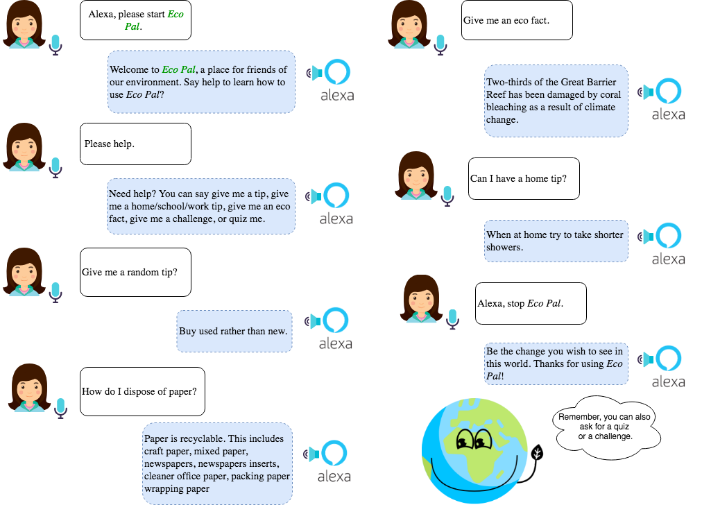

Eco's User Manual
We want to make it as easy as possible for you to have access to reliable information regarding sustainability. Whether that means you're at home cooking and you feel like you'd like to know how you could improve your environmental footprint or you're not sure how to recycle a car battery. If you need help getting started with our Alexa skill, you're in the right place. This guide will walk you through gaining access to Eco and reducing your environmental impact.
How to Install Eco
1. Have an Amazon account.
In order to interact with any Alexa skills, you'll need to create or have an Amazon account.
2. Have an Amazon Alexa compatible device.
An Alexa skill can only be used by Alexa compatabile devices. This includes devices such as Echo, Echo Dot, Echo Show, Tap, and many more.
3. Have Wi-Fi.
Alexa revolves around Wi-Fi. In order to enable the skill and start the pairing process for your Alexa comptabile device to your Amazon account, you'll need Wi-Fi.
4. Have electricity.
Your Alexa device needs to be plugged in to work. It is not battery operated.
5. Download the Alexa app.
To pair your Amazon account to your Alexa compatible device, you'll need to download the Alexa app on your mobile device, tablet, or computer via your app store. For specific instructions on how to set up your device, click here.
6. Enable Eco, the Alexa skill.
In order to get Eco on your Alexa device, you must first enable Eco through interacting with your Alexa compatible device OR through Amazon's Alexa Skill page.
Enable Eco via Alexa Compatible Device
- Turn on your Alexa device.
- Say "Alexa, enable Eco"
- Let the learning begin!
Enable Eco via Amazon Alexa's Skill Page
- Go to Alexa's skill page
- Search for "Eco"
- Click the skill Eco, select it to open Eco's skill page.
- Click the "Enable" button on the right.
- Voilá! Start interacting with your Eco Pal!

How to Use Eco
Once you've enabled Eco, the Alexa skill, to your Alexa compatible device/account you will be able to interact with the skill by refering to it as Eco Pal.
- Turn on your Alexa device.
- Say "Alexa, start Eco Pal."
- You have the option to say several phrases to interact with our skill:
"Alexa, ask Eco Pal for a random eco-freindly tip."
"Alexa, ask Eco Pal how to be more sustainable at work?"
"Alexa, ask Eco Pal how should I recycle double A batteries?"
"Alexa, can you ask Eco Pal for the closest recycling center?" - When you're done, you can say "Alexa, stop" to end the current action or "Alexa, quit" to exit the current skill.
Try Following this Dialogue!

Frequently Asked Questions
- Why not just Google?
That's a great question. Well to be quite frank, you can just google any of these questions you ask Eco Pal. However, if you use Eco Pal you can trust that the information is from a reliable source of information without having to dedicate the time yourself to verify the information. Also, Eco Pal is more fun and interactive than just googling any of these questions. And you can do it hands-free while cooking, while cleaning, etc!
- Do I need internet/electricity to use an Alexa device?
Yes, you need both of those components in order to interact with Alexa.
- What did we actually create? I thought Alexa was an Amazon thing.
Just like people can create applications for mobile devices or tablets, people can create a skill (an application) for Alexa to make your user experience more entertaining and personable.
- Can I review my previous interactions with Eco?
Yes, you can review voice interactions with Alexa by visiting History in Settings in the Alexa App. Your interactions are grouped by question or request. Tap an entry to see more detail, provide feedback, or listen to audio sent to the Cloud for that entry by tapping the play icon. Sometimes Alexa may not understand you perfectly, and the translations you see in History may not always reflect exactly what you said (for example, they may be inaccurate or incomplete).
- I feel like this is an invasion of my privacy. How can I delete my previous interactions with Eco?
If you're uncomfortable with the idea of leaving around old voice recordings, there's a way to clear the data on your Alexa devices. You can delete specific voice recordings associated with your account by going to History in Settings in the Alexa App, search for the specific entry you want to delete, and then tapping the delete button. Or, you can delete all voice recordings associated with your account for each of your Alexa-enabled products, by selecting the applicable product at the Manage Your Content and Devices. Before you start deleting, though, remember that you're essentially wiping the AI's specialized memory, as it's retaining this information to better serve you.
That's a great question. Well to be quite frank, you can just google any of these questions you ask Eco Pal. However, if you use Eco Pal you can trust that the information is from a reliable source of information without having to dedicate the time yourself to verify the information. Also, Eco Pal is more fun and interactive than just googling any of these questions. And you can do it hands-free while cooking, while cleaning, etc!
Yes, you need both of those components in order to interact with Alexa.
Just like people can create applications for mobile devices or tablets, people can create a skill (an application) for Alexa to make your user experience more entertaining and personable.
Yes, you can review voice interactions with Alexa by visiting History in Settings in the Alexa App. Your interactions are grouped by question or request. Tap an entry to see more detail, provide feedback, or listen to audio sent to the Cloud for that entry by tapping the play icon. Sometimes Alexa may not understand you perfectly, and the translations you see in History may not always reflect exactly what you said (for example, they may be inaccurate or incomplete).
If you're uncomfortable with the idea of leaving around old voice recordings, there's a way to clear the data on your Alexa devices. You can delete specific voice recordings associated with your account by going to History in Settings in the Alexa App, search for the specific entry you want to delete, and then tapping the delete button. Or, you can delete all voice recordings associated with your account for each of your Alexa-enabled products, by selecting the applicable product at the Manage Your Content and Devices. Before you start deleting, though, remember that you're essentially wiping the AI's specialized memory, as it's retaining this information to better serve you.